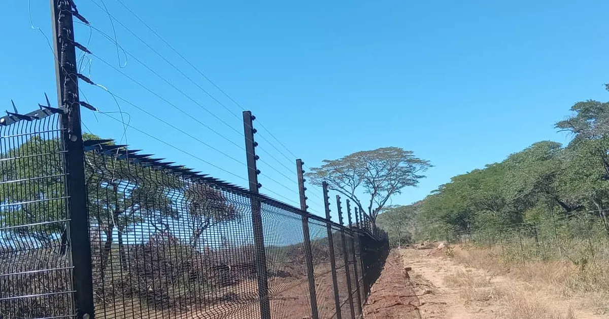
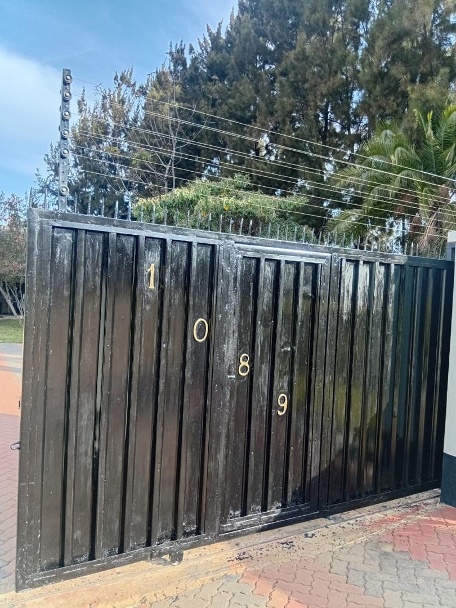

Quick answer
Treat home security as six layers that back each other up: a continuous perimeter fence or wall, a controlled gate, lighting with no dark zones, strong doors and windows, detection such as CCTV and alarms, and backup power for the parts that need electricity. Find the weakest layer first and fix that before buying anything else.

Why layers work better than one strong barrier
Each layer should slow someone down, make them easier to see, or help the household respond. When one layer is tested, the next is already working behind it. A property that relies on a single barrier, however strong it looks, has nothing behind it once that barrier is crossed.
The six layers
| Layer | Its job | What to check |
|---|---|---|
| 1. Perimeter | Define the boundary and slow entry | Gaps, leaning posts, damaged mesh, erosion underneath |
| 2. Entrance | Control who comes in | Locks, hinges, rollers, gate motor and battery |
| 3. Lighting | Remove hiding places | Dark corners, pathways and parking at night |
| 4. The house | Hold out if the boundary is crossed | Door frames and locks, window latches, burglar bars, garage access |
| 5. Detection | Spot activity and raise the alarm | Camera angles, alarm tests, who responds |
| 6. Backup power | Keep layers 2, 3 and 5 working in an outage | Gate battery, alarm battery, recorder and router |
1. A continuous, well-kept perimeter
Your fence, wall and gate set where access is allowed. Walk the full boundary and look for gaps, loose fixings, leaning posts, damaged mesh, corrosion, overgrown plants and soil washed away under the fence. The goal is not the strongest-looking barrier. It is a continuous boundary that suits the site and is kept in good condition. Options such as clearview fencing and razor wire toppings raise the level where the risk is higher.
2. Turn the entrance into a controlled point
A secure perimeter loses its value if the gate is the easiest way in. Check that locks engage, hinges and rollers move freely and an automated gate closes fully every time. Gate automation, intercoms and simple routines for visitors and staff make the entrance easier to manage. See our gate motor guide.

3. Remove the dark zones
Outside lighting improves visibility at gates, paths, parking areas and weak corners, and gives cameras a better picture at night. Walk the property after dark rather than judging it in daylight, and give backup power to the lights that matter most instead of every light.
4. Strengthen doors, windows and other entry points
The perimeter supports the house; it does not replace it. Check door locks and frames, window latches, burglar bars where appropriate, garage access and any less obvious way into the building. A break-in does not always start at the front gate.
5. Add detection you can rely on
- Point cameras at approaches and entrances, not just wide views of the yard.
- Test alarms and beams; a panel being on does not mean every sensor works.
- Decide who receives alerts and what they do next.
6. Plan for power cuts
Once the gate, alarm, cameras or router depend on electricity, backup power becomes part of your security. A camera that is powered is not much use if the recorder or router has already switched off. Our power-cut security guide shows how to test the whole chain.
Where to start
Do not start with the most visible product. Walk the property, find the easiest way in, and strengthen that layer first. Then check how the layers work together in daylight, at night and with the mains switched off.
Get a quote from Azzar
Send us your location, what you need and a few photos. We reply with a recommendation and a no-obligation quote, and arrange a free site assessment if one is needed.